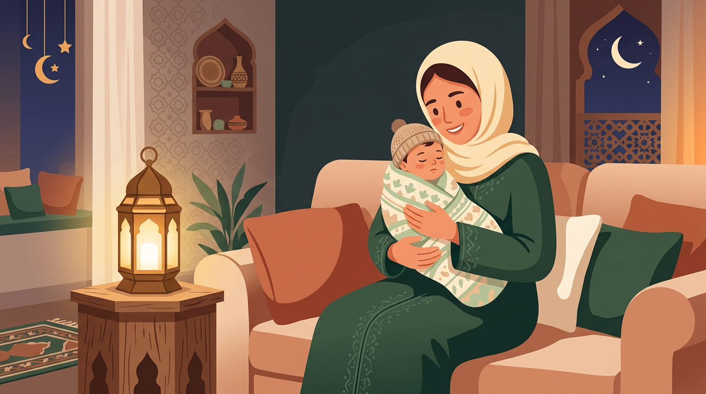

نوم الطفل في رمضان: دليل عملي حسب عمر طفلك (مع جداول جاهزة)

الساعة 11 بالليل. رجعتي من التراويح ومعك الأطفال. الصغير يبكي من التعب، والكبير "مو نعسان" ويبي يقعد مع أبوه. وأنتِ بين الإحساس بالذنب — هل أخرّب نومهم عشان أجواء رمضان؟ — وبين الرغبة إنهم يعيشون روحانية الشهر.
الخبر الحلو: تقدرين توازنين. وهذا الدليل يعطيك جداول عملية حسب عمر طفلك — تبدأين فيها من الليلة.
ليش نوم الأطفال يتغير في رمضان؟
في رمضان، كل شي يتغير: التراويح تخلّص متأخر، السحور يصحّي البيت كله، والسهرات العائلية ما تنتهي. وفوق هذا، الأجواء في السعودية كلها سهر — المولات مفتوحة لين الفجر، والعائلة تتجمع بعد العشاء.
النتيجة؟ طفلك ينام متأخر، يصحى متعب، يصير عصبي أكثر، ونوبات البكاء والغضب تزيد. وإذا كان طفلك يحاول يصوم، قلة النوم تخلّي الصيام أصعب بكثير.
بس خلينا نكون واقعيين: بعض التغيير في رمضان طبيعي ومتوقع. الهدف مو إنك تمنعين أي تغيير — الهدف إنك تديرينه بحيث ما يأثر على صحة طفلك ومزاجه.
جدول نوم الرضيع في رمضان (٠-١٢ شهر)
الرضيع ما يصوم وما يحتاج يشارك في أجواء السهر. جسمه الصغير يحتاج روتين ثابت، ورمضان مو سبب نغيّر له كل شي.
جدول مقترح للرضيع
- ٧:٠٠ م — بداية روتين النوم (حمام، رضاعة، تهدئة)
- ٧:٣٠-٨:٠٠ م — نوم الرضيع (قبل ما تطلعون للتراويح)
- الرضعات الليلية — حسب عمره وحاجته، بدون إضاءة قوية
- السحور — إذا صحي، رضعة سريعة ورجّعيه للنوم فوراً
- ٧:٠٠-٨:٠٠ ص — صحيان الصباح
نصيحة ذهبية: استخدمي جهاز الضوضاء البيضاء (White Noise) عشان تحجبين أصوات السهر والتراويح عن الرضيع. وخلّي غرفته مظلمة تماماً حتى لو باقي البيت صاحي.
إذا صحي الرضيع وقت السحور — وهذا يصير كثير — أرضعيه بهدوء بدون ما تفتحين الأنوار القوية أو تكلمينه كثير. الهدف إنه يرجع ينام بسرعة وما يفهم إن هذا وقت صحيان.
جدول نوم الطفل الصغير في رمضان (١-٣ سنوات)
طفلك في هالعمر يقدر يحس بأجواء رمضان ويستمتع فيها — بس جسمه لسه يحتاج ١١-١٤ ساعة نوم في اليوم حسب توصيات الأكاديمية الأمريكية لطب الأطفال (AAP). وهذا يعني إن القيلولة مقدسة.
جدول مقترح للطفل (١-٣ سنوات)
- ١٢:٣٠-٣:٠٠ م — قيلولة (لا تتنازلين عنها!)
- بعد الفطور — وقت لعب هادي مع العائلة
- ٨:٣٠-٩:٠٠ م — بداية روتين النوم
- ٩:٠٠-٩:٣٠ م — نوم (أقصى حد للتأخير: ٤٥ دقيقة عن موعده المعتاد)
- السحور — لا توقظيه. إذا صحي لحاله، شربة ماء وارجعيه للنوم
التراويح مع طفل صغير؟ ممكن تاخذينه لركعة أو ركعتين عشان يحس بالجو — بس لا تتوقعين إنه يقعد ساكت. إذا بدأ يتعب أو يزعّل، ارجعوا البيت بدون ما تحسين بالذنب. صلاة التراويح في البيت خيار ممتاز للأمهات في هالمرحلة.
القاعدة الذهبية: تقدرين تأخرين النوم ٣٠-٤٥ دقيقة عن الموعد المعتاد — أكثر من كذا وبتدفعين الثمن بكرة بطفل عصبي ومتعب.
جدول نوم الطفل في سن المدرسة في رمضان (٤-٧ سنوات)
هذا العمر هو اللي فيه التوازن يصير أصعب — طفلك يفهم رمضان ويبي يشارك، بس جسمه لسه يحتاج ١٠-١٣ ساعة نوم.
جدول مقترح (٤-٧ سنوات)
- الفطور — وجبة عائلية يشارك فيها
- بعد الفطور — يروح معكم لصلاة التراويح (عدد ركعات حسب عمره وطاقته)
- ٩:٣٠-١٠:٠٠ م — روتين النوم يبدأ (أيام الدوام)
- ١٠:٣٠ م — أقصى حد للنوم في أيام الدوام
- ١١:٠٠ م — مرونة أكثر في عطلة نهاية الأسبوع
- السحور — وقّظيه فقط إذا كان يحاول يصوم (جزئي أو كامل)
الفرق بين أيام الدوام وعطلة نهاية الأسبوع مهم. في أيام المدرسة، التأخير المقبول ساعة واحدة بالكثير عن الموعد المعتاد. في عطلة نهاية الأسبوع، تقدرين تكونين أكثر مرونة — بس حاولي ما يتجاوز ١١ بالليل.
التراويح مع الأطفال — متى وكيف؟
سؤال كل أم في رمضان: آخذ الأطفال للتراويح ولا أخليهم في البيت؟
تحت ٣ سنوات: صلّي التراويح في البيت إذا ما عندك أحد يقعد معهم. أخذ طفل صغير للمسجد وقت التراويح غالباً يكون مرهق لك وله ولباقي المصلين.
من ٣-٥ سنوات: ممكن تاخذينهم لركعتين أو ثلاث — خصوصاً إذا المسجد فيه مكان مخصص للأطفال. جهّزي "شنطة التراويح": مويه، سناك خفيف، كتاب تلوين صغير. وإذا بدأ يزعّل، اطلعي بدون ضغط.
من ٦ سنوات وفوق: يقدر يصلي معكم عدد أكبر من الركعات. علّميه آداب المسجد قبل ما تروحون. واتفقوا على "إشارة" إذا تعب — مثلاً يمسك يدك — عشان تطلعون بهدوء.
النبي ﷺ كان يتعامل مع وجود الأطفال في الصلاة برحمة وتقبّل. لا تحسّين إنك لازم تختارين بين عبادتك وأطفالك — الاثنين يمشون مع بعض.
السحور والأطفال — توقظيهم ولا تخليهم؟
القرار يعتمد على عمر طفلك وهل يصوم ولا لا:
الرضع (تحت سنة): لا توقظيهم أبداً. إذا صحوا لحالهم، أرضعيهم وارجعيهم للنوم.
الأطفال الصغار (١-٤ سنوات): لا توقظيهم. هم ما يصومون، والسحور ما يخصهم. إذا صحوا من الأصوات، اعطيهم شربة ماء ورجّعيهم للنوم بهدوء.
الأطفال اللي يصومون (٥+ سنوات): وقّظيهم بلطف — لا تفتحين الأنوار مرة وحدة. ابدأي بمسح شعرهم أو همس. خلّي السحور جاهز من الليل عشان ما يطول وقت صحيانهم. أكل خفيف، شرب ماء كثير، ورجوع للنوم خلال ٢٠ دقيقة.
أكلات سحور تساعد الطفل يرجع ينام
- موز مع ملعقة زبدة فول سوداني — سريع ومشبع
- كوب حليب دافي مع تمرة
- جبنة مع خبز — بروتين يعطي طاقة طويلة
- تجنّبي السكريات والعصائر — تصحّي الطفل أكثر وما تشبعه
كيف ترجعين لروتين النوم بعد رمضان؟
هذا السؤال اللي كل أم تسأله آخر أسبوع من رمضان. والخبر الحلو إن الرجوع للروتين أسهل مما تتوقعين — إذا بدأتِ قبل العيد بيومين أو ثلاثة.
الخطة: كل ليلة، قدّمي موعد النوم ١٥ دقيقة. إذا كان طفلك ينام الساعة ١٠:٣٠ في رمضان، اليوم ١٠:١٥، بكرة ١٠:٠٠، وهكذا. خلال أسبوع بترجعين للموعد الطبيعي.
أيام العيد بتكون فوضى — وهذا طبيعي. لا تضغطين على نفسك. بس بعد العيد بيوم أو يومين، ارجعي للروتين بحزم ولطف.
إذا كان عندك طفل يروح المدرسة، ابدأي الخطة قبل أول يوم دوام بأسبوع على الأقل. الرجوع المفاجئ للمدرسة مع قلة نوم = أسبوع صعب على الكل.
أخطاء شائعة في نوم الأطفال في رمضان
١. "يسهرون مع الكبار": أكبر خطأ. الكبار يقدرون يعوّضون النوم — الأطفال لا. جسم الطفل يحتاج نوم منتظم للنمو والمناعة والتركيز. إذا سهر معكم لين ١٢، ما يقدر "يعوّض" بنوم الصباح.
٢. إلغاء القيلولة عشان "يتعب وينام بدري": هذي خرافة. الطفل المتعب ما ينام أسهل — العكس يصير. يدخل في حالة "overtired" ويقاوم النوم أكثر وتزيد نوبات الغضب.
٣. الشاشات قبل النوم: "خلّيه يتفرج لين ما يغفى" — الضوء الأزرق من الشاشات يأخر إفراز هرمون الميلاتونين (هرمون النوم) ويخلّي النوم أخف وأقل جودة. أوقفي الشاشات قبل النوم بساعة على الأقل.
٤. إجبار طفل غير صائم على السحور: إذا طفلك ما يصوم، لا تصحّيه للسحور "عشان يتعوّد". النوم المتواصل في هالعمر أهم بكثير من السحور.
خذيها خطوة بخطوة
نوم الأطفال في رمضان تحدي حقيقي — بس مو مستحيل. الفكرة مو إنك تمنعين أي تغيير (هذا غير واقعي)، الفكرة إنك تديرين التغيير بحيث ما يأثر على صحة طفلك ومزاجه.
خلاصة عملية — ابدأي من الليلة
- حدّدي موعد نوم لطفلك حسب عمره — والتزمي فيه قدر الإمكان
- القيلولة مقدسة — لا تلغيها أبداً للأطفال تحت ٤ سنوات
- التأخير المقبول: ٣٠-٤٥ دقيقة للصغار، ساعة للكبار
- أوقفي الشاشات قبل النوم بساعة
- قبل العيد بيومين، ابدأي ترجّعين الموعد ١٥ دقيقة كل ليلة
وتذكّري: بعض الفوضى في رمضان طبيعية ومتوقعة. أنتِ أم رائعة لأنك هنا تبحثين عن الأفضل لأطفالك. خذيها يوم بيوم، واستمتعي بالشهر مع عائلتك.